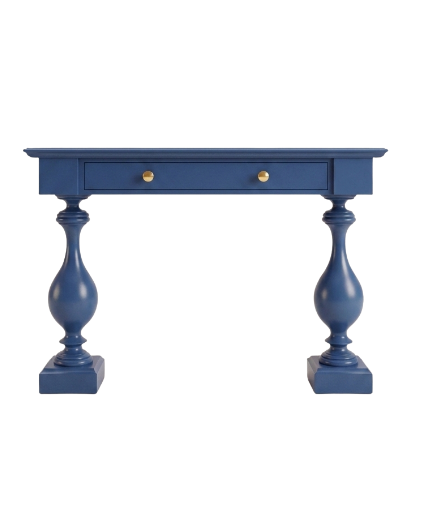
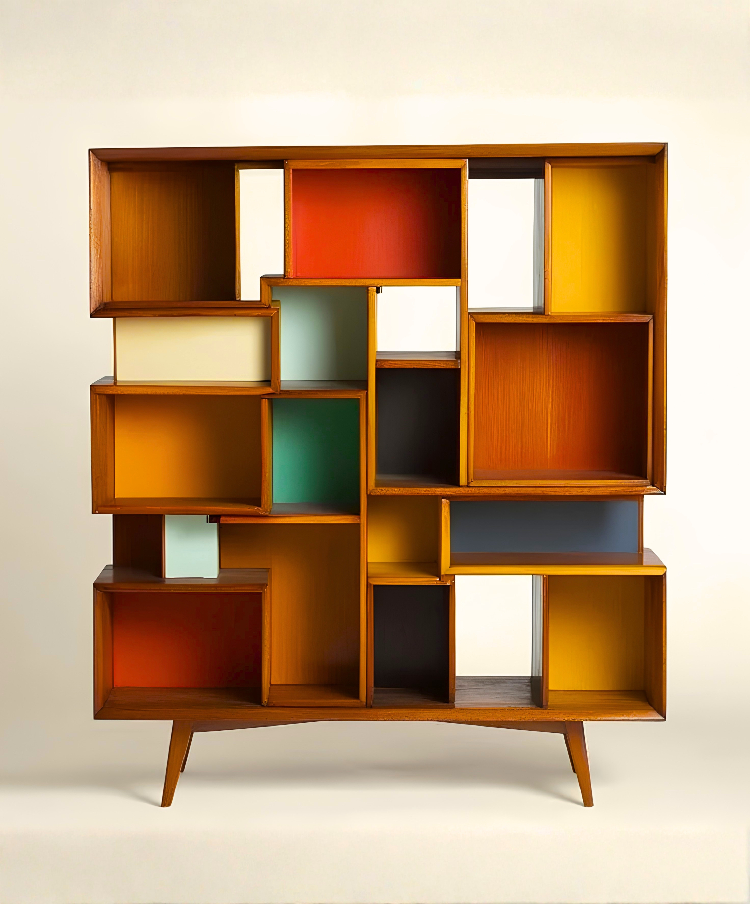
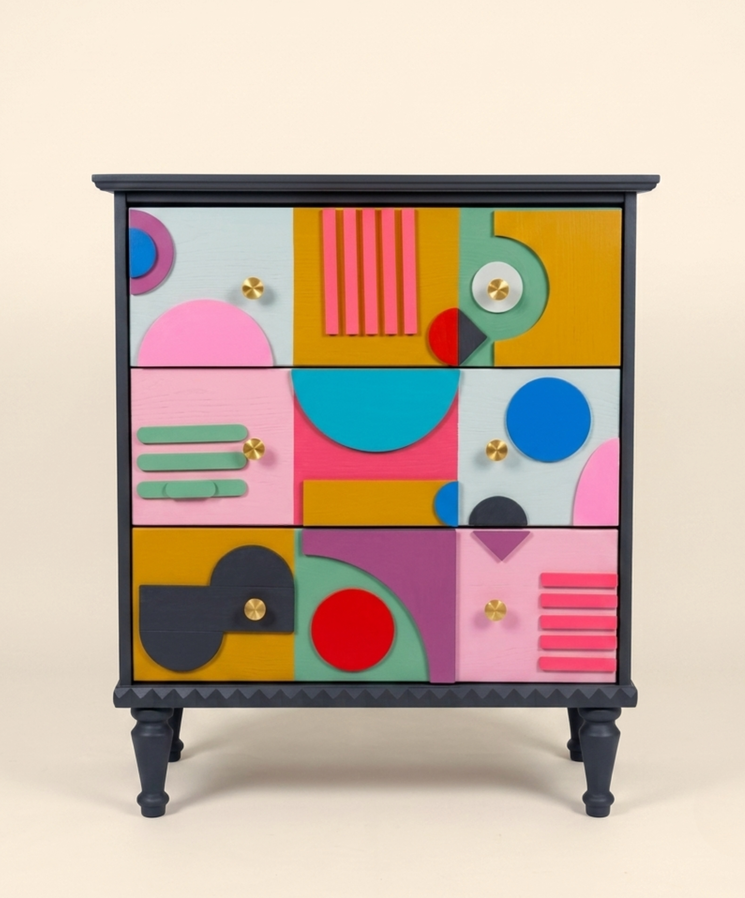
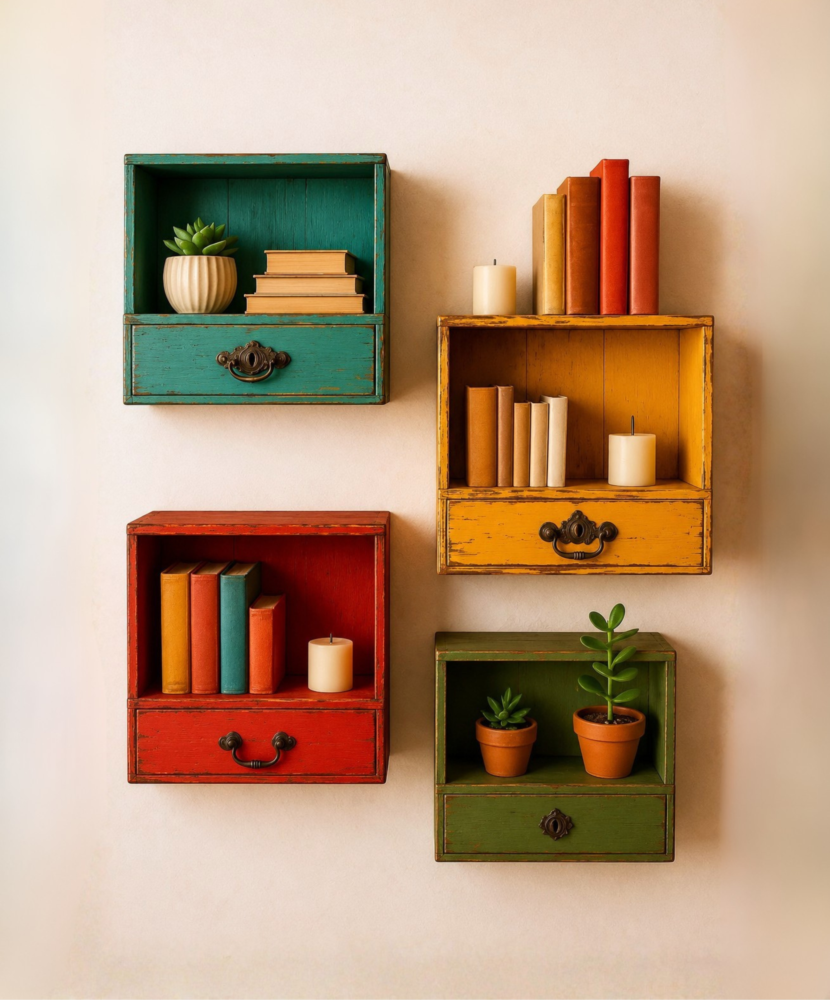

PROYECTOS
Pintá para transformar
RECUPERACIÓN INTEGRAL
14/04/2026
CURSOS
Con Raíz vas a aprender técnicas de restauración mediante propuestas prácticas y creativas. Vas a poder darle una nueva vida a los muebles que ya son tuyos.
01

Reparación inicial
de muebles
Aprendé a diagnosticar y reparar la estructura de muebles dañados. Técnicas de ensamblado, lijado y preparación de superficie para dejar la pieza lista para su transformación.
Ver más
02

Técnicas de color,
textura y diseño
Dominá el uso del color, lacas, patinas y texturas decorativas. Descubrí cómo combinar paletas modernas y acabados para crear una identidad visual única en cada pieza.
Ver más
03

Restauración
integral de la pieza
El proceso completo de principio a fin: análisis, reparación estructural, tratamiento de superficie y diseño final. Transformá un mueble de otra época en una pieza contemporánea.
Ver másCÁPSULA
Próximamente
Piezas únicas ensambladas 100% a partir de retazos de muebles irrecuperables.


